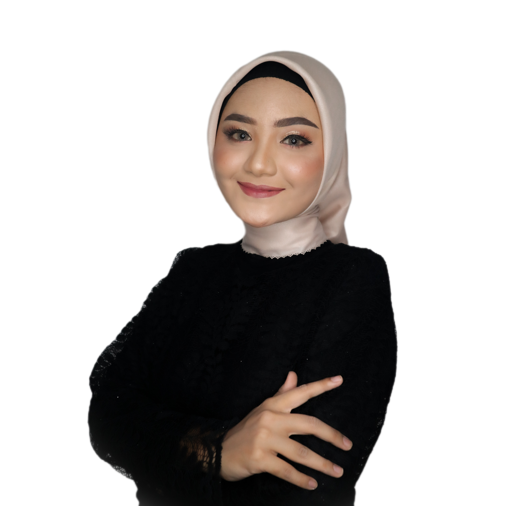

Ulfi Priandini
Tentang Saya
Bergerak di dunia komunikasi dengan pengalaman 2 tahun lebih dalam menyampaikan informasi yang informatif, berhasil dalam meningkatkan, membangun dan memelihara hubungan publik dengan perusahaan. Menjadi perwakilan organisasi untuk dapat melakukan komunikasi yang efektif terhadap publik.
Keahlian Saya
- Komunikasi
- Membina relasi
- Komunikasi krisis
- Manajemen waktu
Pendidikan Saya
- SMKS Muhammadiyah 1 Weleri | Otomatisasi Tata Kelola Perkantoran
- Universitas Wahid Hasyim | Hubungan Internasional
Organisasi
- Divisi Hubungan Masyarakat | Komunitas Public Speaking dan Broadcasting
- Divisi Abdi Masyarakat | Himpunan Mahasiswa Hubungan Internasional